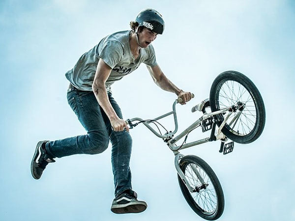

A BMX, a kerékpáros motocross vagy bike motocross rövidítése, egy kerékpársport, amelyet BMX kerékpárokon hajtanak végre, akár BMX-versenyen, akár freestyle BMX-en, vagy általános on- vagy off-road rekreációban. A BMX az 1970-es években kezdődött, amikor a fiatal kerékpárosok motocross pályákat sajátítottak ki rekreációs célokra és mutatványozásra, végül speciális BMX kerékpárokká és versenyekké fejlődtek.
